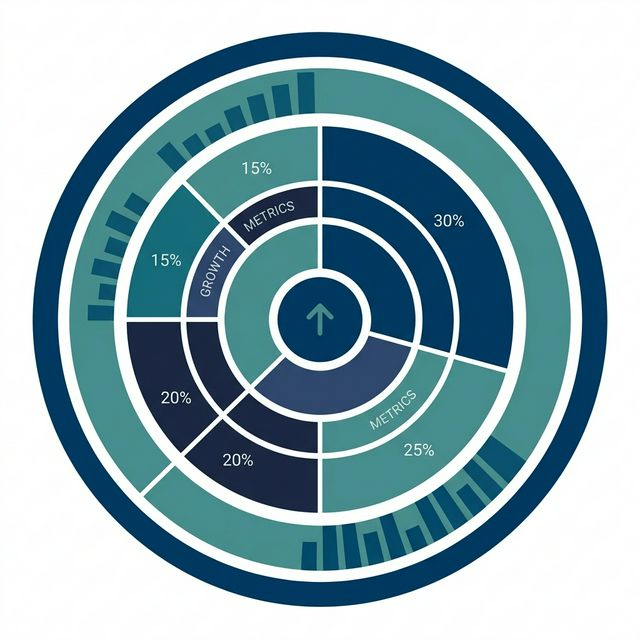

Stop guessing. Let our AI simulate real VC scrutiny before you build.
85%
of founders struggle to clearly articulate their value proposition. Let our AI fortify your pitch before you face real investors.
Provide a high-level overview of your business idea.
Upload Video or Voice PitchSupported: MP3, WAV, MP4, MOV (Max 50MB)
OR
0:00 - Recording... Click to Stop
AI is Simulating VC Review...
[Extracting audio features... Analyzing literal pitch, tone, and pacing]
Parsing Executive Summary
Cross-referencing Market Data
Evaluating Revenue Viability
Generating Feedback
Clarification Needed
Your idea is missing some key details. Please answer the following questions to proceed:

1. Core Problem
2. Target Audience
3. Proposed Solution
4. Lean Plan
5. Tough VC Questions
Live Delivery Analysis
What PitchForge AI Does
Most founders fail because their narrative breaks under pressure. PitchForge AI bulletproofs your pitch by simulating the hardest parts of investor scrutiny.
What it does
PitchForge instantly processes your executive summary, problem, solution, and audience inputs (or raw audio/video waveforms), returning actionable VC-grade feedback.
Why it's important
85% of startups fail to articulate their value proposition under pressure. This tool forces you to address fatal gaps in your narrative before a real investor shuts you down.
How it does it
By cross-referencing your pitch against a proprietary database of YC frameworks, elite entrepreneurial heuristics, and millionaire-making pitch patterns with advanced LLMs.
Why PitchForge AI?
Generic chatbots are fine for writing emails, but they fail when simulating the high-stakes environment of startup funding.
PitchForge AI is exclusively trained on the real analysis of elite entrepreneurs, successful podcasters, and self-made millionaires.
We don't just generate text; we simulate reality to make your pitch undeniable.
Trusted by Founders At
Y COMBINATORTECHSTARS500 STARTUPS
Over 10,000+ pitches analyzed successfully.
Instant Feedback Get actionable critique instantly.
VC-Grade Analysis Trained on thousands of successful pitches.